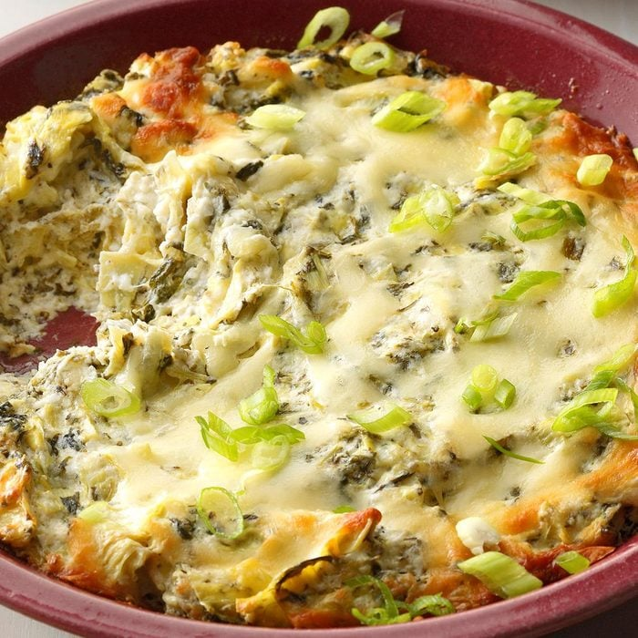
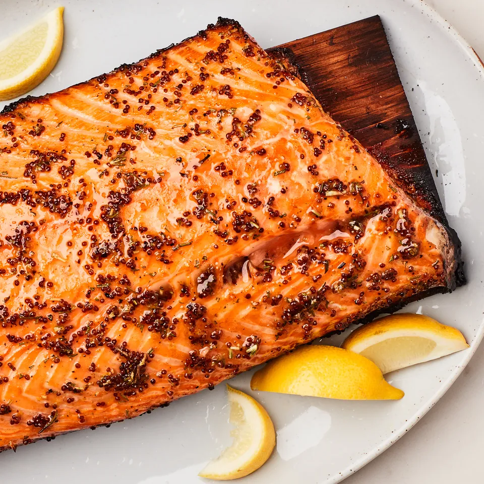
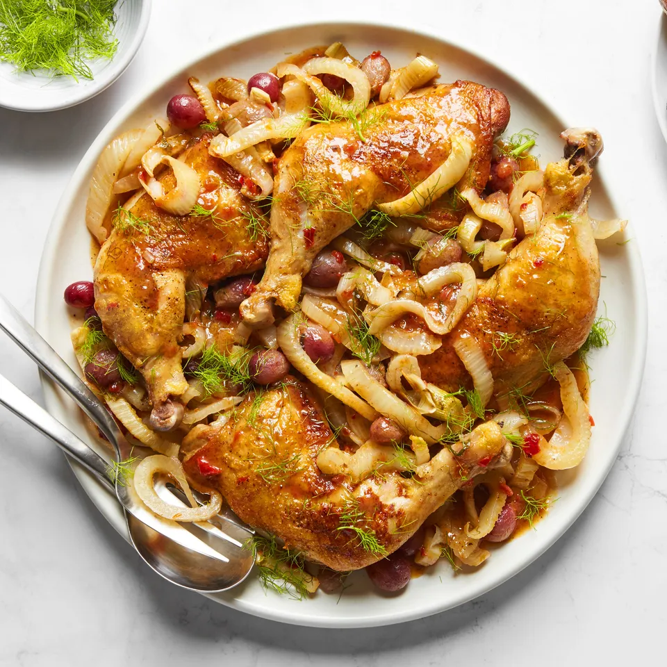
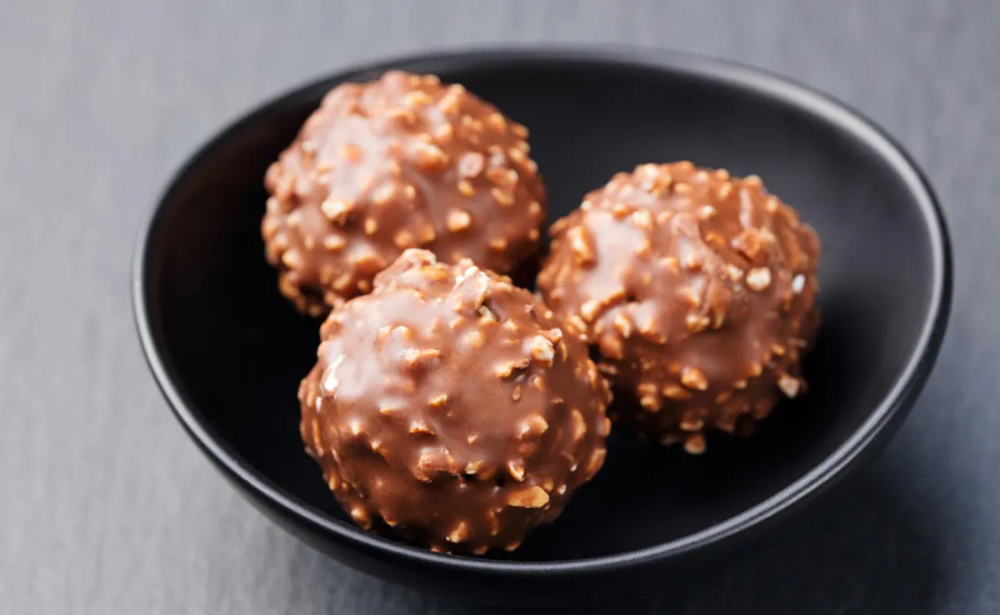
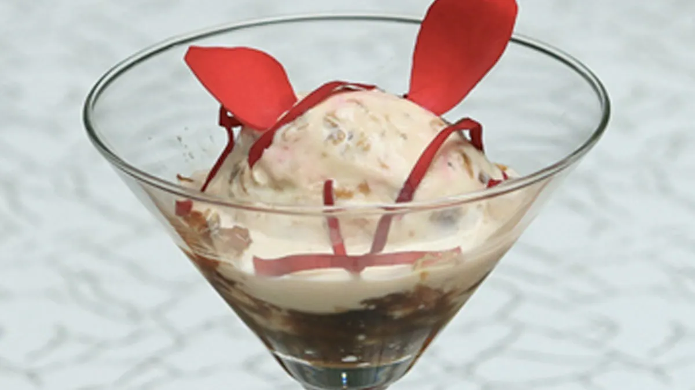
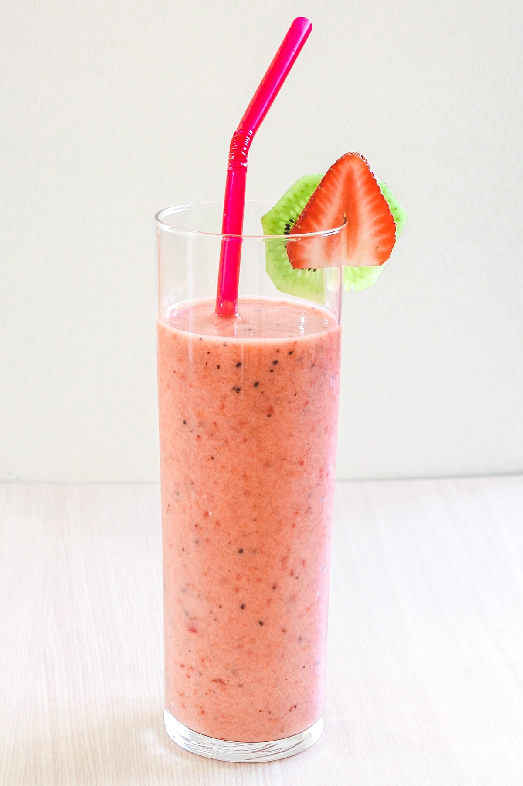
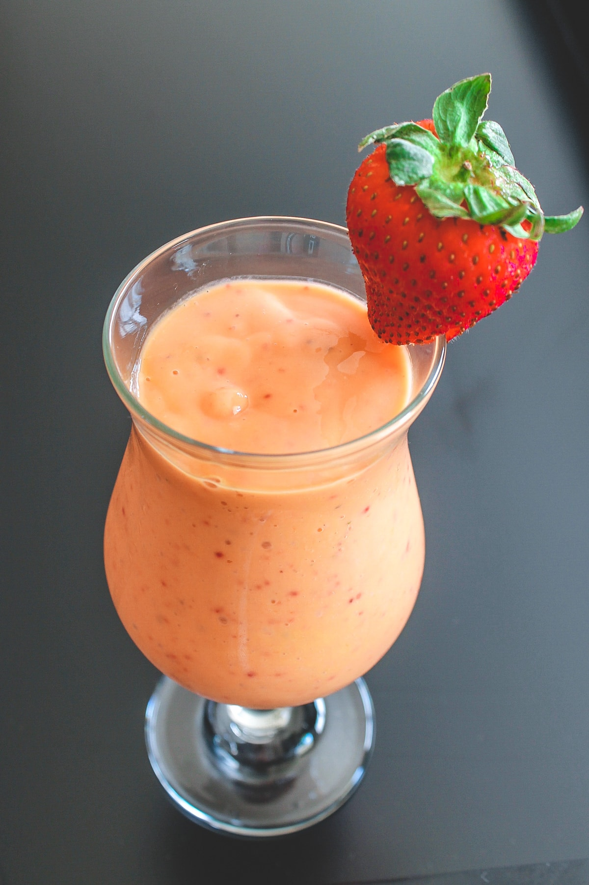

| Appetizers | Contact |
Appetizers
Appetizers are the main dishes of the day. They are often served in a variety of Flavours and Taste

These teriyaki pineapple meatballs appetizer changed so many times because of my families suggestions that it eventually became a main course. I think the homemade sauce sets these meatballs apart. —Evette Nowicki, Oak Harbor, Washington

Who says cheese and sausage get to have all the fun? Make this fruit charcuterie board a party go-to with any that are in season. —Taste of Home Test Kitchen
- 
One taste of this outrageously delicious hot spinach artichoke dip and your guests will not stop eating it until it is gone. The savory blend of artichokes, spinach and Parmesan cheese is positively addictive! It tastes even better if you make it the night before and chill it in the fridge before baking. —Michelle Krzmarzick, Torrance, California
Main Course
MainCourses are the main dishes of the day. They are often served in a variety of Flavours and Taste
- 
Smoky flavor to your dish. Use the cedar plank as a platform for grilling fish, meat, or veggies. Enhance your grilling repertoire with some other great Healthy Living Recipes for the Grill.
- 
Air Fryer Chicken Tikka Recipe: Chicken Tikka is a popular and a delicious snack which traditionally cook in tandoor but here we bring a quick and easy recipe of this. You can make it in a air fryer.
Desserts
Desserts are the main dishes of the day. They are often served in a variety of Flavours and Taste
- 
Homemade Ferrero Rocher Recipe: We all are big fan of Ferrero Rocher, but do you know one thing that you can made these delicious chocolate at home with few ingredients.
- 
Gulkand Ice Cream Recipe: This is a quick and easy cream recipe which is perfect to make in this summer season.
Beverages
Beverages are the main dishes of the day. They are often served in a variety of Flavours and Taste
- 
Taste & Texture: It is a little creamy and light, sweet and has a touch of zesty flavor.
- 
Healthy and filling: Enjoy it as a breakfast or mid-evening snack. This strawberry mango smoothie is perfectly filling, satisfying and deliciously good. It will keep you full until lunchtime.
Contact Information and Reservation
The website should provide contact details, including the restaurant's address, phone number, and a contact form for reservations. Customers should be able to input their name, email, desired reservation date, party size, and any special requests.